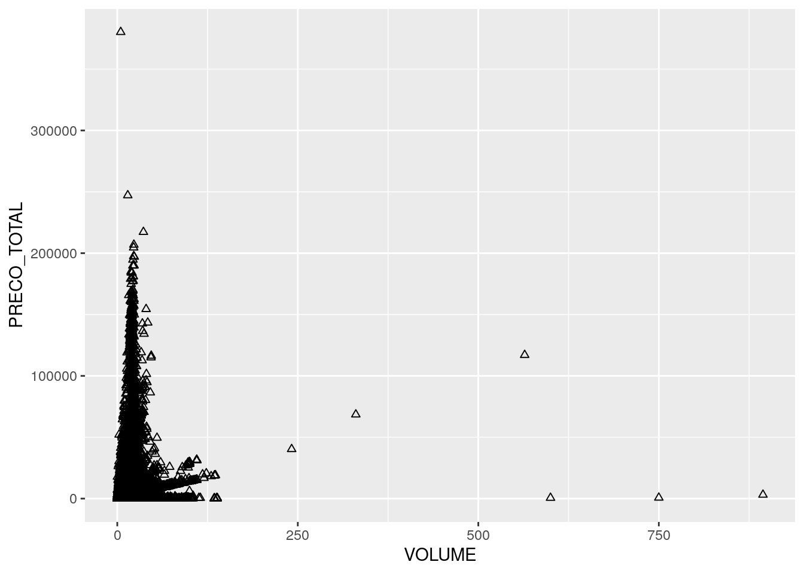
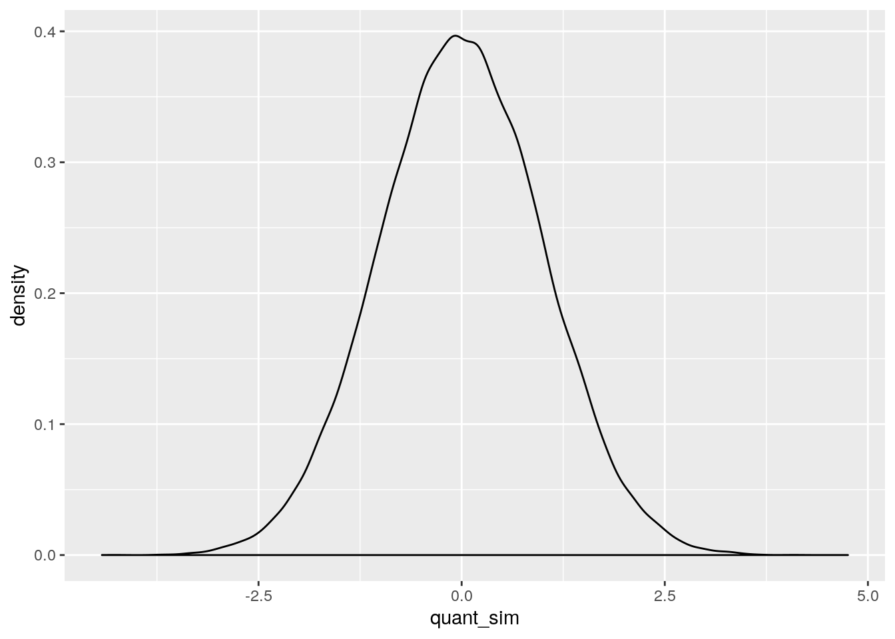
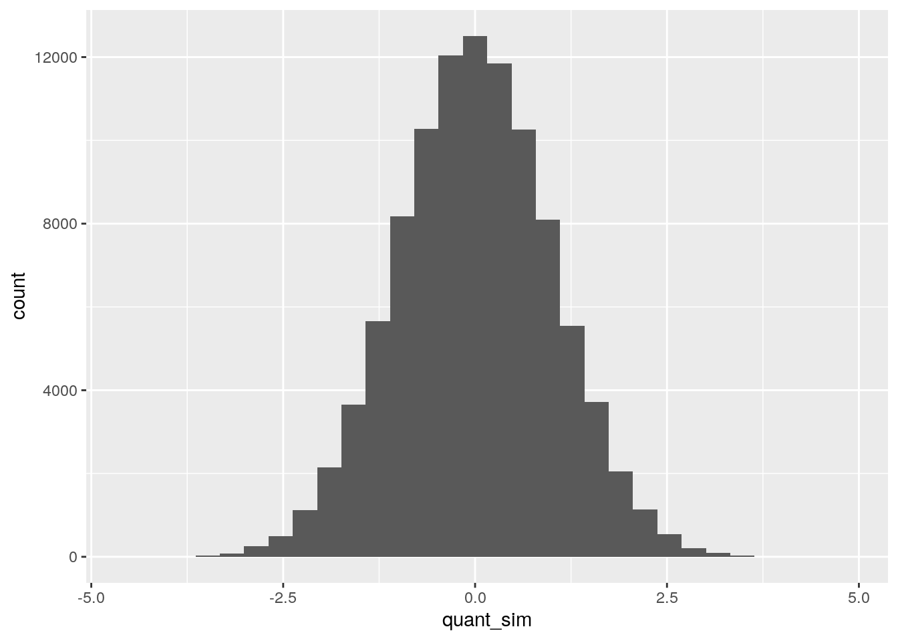
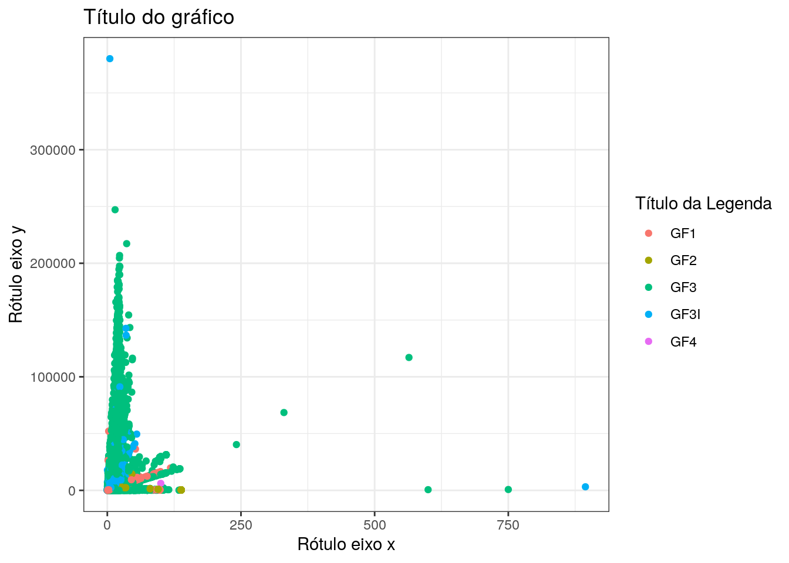

2 Módulo II
2.1 Leitura de Dados no R
Até o momento, trabalhamos criando objetos a partir de dados informados via script ou console. No entanto, o mais comum quando se faz análise de dados, é ler dados a partir de fontes externas, como um arquivo .txt ou .csv, um banco de dados relacional (SQL) no servidor de nosso trabalho, ou ainda, a partir de páginas da internet. Nesta seção, veremos como ler bases de dados armazenadas localmente no computador.
Eu costumo dizer que, em R, sempre há pelo menos 3 formas diferentes de realizar uma mesma tarefa. No caso caso da leitura de dados, isso não é diferente. o R possui diversos pacotes para realizar a leitura dos dados; uns focam na rapidez, outros na praticidade e outros, ainda, são feitos especificamente para manusear bases de dados massivas. Quanto a esse último aspecto, há de se reconhecer que o R não tem um gerenciamento de memória que permita ao usuário carregar bancos de dados muito grandes (na casa das 10 milhões de linhas mais ou menos). Isso é, de certa forma, proposital, uma vez que o R foi criado para tornar mais fácil a vida do usuário que lida com análise dados. Mas há que se ressaltar que, devido a sua comunidade extremamente ativa, vários pacotes foram e vem sendo desenvolvidos com o objetivo de melhorar a forma como o R lida com o armazenamento de objetos na memória.
Neste curso, nos focaremos na utilização do pacote readr, por entendermos ser um meio termo entre praticidade e rapidez, considerando as alternativas do base R e da função fread() do pacote data.table.
2.1.1 O Tidyverse
O readr compõe um conjunto de pacotes chamado de Tidyverse.
“The tidyverse is a set of packages that work with harmony because they share common data representtions and API design. The tidyverse package is designed to make it easy to install and load core packages from the tidyverse in a single command.” * Hadley Wickham *

Hexsticker do Tidyverse
Podemos definir o Tidyverse, então, como um meta-package que congrega uma coleção de diversos outros pacotes R voltados para importação, exploração, manipulação e visualização de dados. Vão desde pacotes para manipulação de strings, expressões regulares, datas, passando por pacotes de leitura e importação, manipulação e visualização de dados, até a geração de relatórios e criação de páginas web, dentre outras coisas.
Esses pacotes buscam propiciar uma maior padronização e facilidade na forma de lidar com dados no R.
2.1.2 Leitura e Exportação de Dados usando readr
O objetivo do pacote readr é tornar mais fácil e amigável a leitura de bases de dados retangulares/tabulares (csv, txt e fwf) no R. Comparado às alternativas do base R, o readr é mais inteligente no sentido de tentar advinhar os formatos das colunas dos dados, ainda permitindo, se necessário, a especificação de padrões pelo usuário.
As funções de leitura mais importantes no pacote são:
read_csv(): lê arquivos.csvou.txtno formato americano, onde o separador de colunas é a vírgula;read_csv2(): lê arquivos.csvou.txtno formato pt-br, onde o separador de colunas é o ponto e vírgula;read_tsv(): lê arquivos.csvou.txt, onde o separador de colunas é o tab\t;read_table(): lê arquivos.txt, onde o separador de colunas é é o espaço em branco`;read_delim(): permite ler arquivos de diversas extensões, onde o usuário pode especificar o delimitador por meio do parâmetrodelim.
Vamos para a prática, utilizando dados editados a partir da base Produção Madeireira de Espécies Nativas Brasileiras: 2012 a 2017 publicada pelo IBAMA. Há diversas bases nesse site, bem como scripts em R para facilitar a manipulação dos dados. Você pode baixar os dados. No entanto, como nosso objetivo é criar a experiência de leitua, editamos aleatoriamente essa base, reduzindo seu tamanho para 100 mil linhas, e a disponibilizamos neste link. Uma vez na página, você pode salvá-la em seu computador clicando com o botão direito do mouse e depois em Salvar como.
Note que os dados estão em um arquivo .csv no padrão norte-americano (colunas separadas por vírgulas ,).
Vamos fazer a leitura do arquivo que foi salvo em nosso computador.
DICA: No seu computador, o caminho para o arquivo será outro.
library(readr)
tb_ibama <- read_csv(file="C:\\Users\\...\\PA GF 2017 jan-jun.csv")
# ou utilizando a função mais genérica
tb_ibama <- read_delim(file="C:\\Users\\...\\PA GF 2017 jan-jun.csv",
delim = ",")Se você não quiser salvar a base em seu computador, lendo o aqruivo direto do site, você também pode. É só copiar o endereço do arquivo apresentado no browser e passar para o argumento file. Caminhos passados para o argumento file começados em http://, https://, ftp://, ou ftps:// resultam no download e leitura automática do arquivo.
## Parsed with column specification:
## cols(
## X1 = col_double(),
## TIPO_GF = col_character(),
## STATUS_GF = col_character(),
## UF_REMETENTE = col_character(),
## MUNICÍPIO_REMETENTE = col_character(),
## TIPO_DESTINO = col_character(),
## CEPROF_DESTINATÁRIO = col_character(),
## UF_DESTINATÁRIO = col_character(),
## MUNICÍPIO_DESTINATÁRIO = col_character(),
## N_AUTORIZAÇÃO = col_character(),
## PROCESSO = col_character(),
## EMISSAO = col_double(),
## NOME_CIENTÍFICO = col_character(),
## PRODUTO = col_character(),
## VOLUME = col_double(),
## UNID = col_character(),
## PRECO_TOTAL = col_double()
## )Note que assim que o arquivo é lido, as funções imprimem no console os nomes de cada coluna e as formas como elas foram lidas. Isto permite ao usuário checar se tudo ocorreu bem durante a leitura. Caso alguma coluna não tenha sido lida no formato em que você esperava, é só copiar a saída e rodar a função novamente, mudando a especificação daquela coluna em particular.
Por exemplo, vamos alterar a coluna EMISSAO de ponto flutante/decimal double (que ocupa mais espaço na memória), para que seja lida como número inteiro integer. Fazemos essa especificação no argumento col_types.
tb_ibama <- read_csv(file="https://raw.githubusercontent.com/allanvc/book_ADR-T/master/datasets/PA%20GF%202017%20jan-jun_editada.csv",
col_types = cols(
X1 = col_double(),
TIPO_GF = col_character(),
STATUS_GF = col_character(),
UF_REMETENTE = col_character(),
MUNICÍPIO_REMETENTE = col_character(),
TIPO_DESTINO = col_character(),
CEPROF_DESTINATÁRIO = col_character(),
UF_DESTINATÁRIO = col_character(),
MUNICÍPIO_DESTINATÁRIO = col_character(),
N_AUTORIZAÇÃO = col_character(),
PROCESSO = col_character(),
EMISSAO = col_integer(),
NOME_CIENTÍFICO = col_character(),
PRODUTO = col_character(),
VOLUME = col_double(),
UNID = col_character(),
PRECO_TOTAL = col_double()
)
)Uma vez lido o arquivo, podemos inspecioná-lo chamando o objeto criado, ou clicando no nome do objeto em nosso environment.
## # A tibble: 100,000 x 17
## X1 TIPO_GF STATUS_GF UF_REMETENTE MUNICÍPIO_REMET… TIPO_DESTINO CEPROF_DESTINAT… UF_DESTINATÁRIO MUNICÍPIO_DESTI…
## <dbl> <chr> <chr> <chr> <chr> <chr> <chr> <chr> <chr>
## 1 40644 GF1 RECEBIDO PA Santarém EMPREENDIME… XXXX PA São Miguel do G…
## 2 153879 GF1 RECEBIDO PA Alenquer EMPREENDIME… XXXX PA Tailândia
## 3 66847 GF1 RECEBIDO PA Rurópolis EMPREENDIME… XXXX PA Rurópolis
## 4 319645 GF3I RECEBIDO PA Tucuruí EMPREENDIME… <NA> BA Macaúbas
## 5 19190 GF3 RECEBIDO PA Paragominas EMPREENDIME… XXXX PA Paragominas
## 6 317951 GF2 RECEBIDO PA Breu Branco EMPREENDIME… XXXX PA Breu Branco
## 7 201275 GF3I RECEBIDO PA Benevides EMPREENDIME… <NA> BA Vera Cruz
## 8 275969 GF3I RECEBIDO PA Tucuruí EMPREENDIME… <NA> BA Feira de Santana
## 9 158094 GF3I RECEBIDO PA Moju EMPREENDIME… <NA> SE Aracaju
## 10 181537 GF1 RECEBIDO PA Santarém EMPREENDIME… XXXX PA Santa Bárbara d…
## # … with 99,990 more rows, and 8 more variables: N_AUTORIZAÇÃO <chr>, PROCESSO <chr>, EMISSAO <int>,
## # NOME_CIENTÍFICO <chr>, PRODUTO <chr>, VOLUME <dbl>, UNID <chr>, PRECO_TOTAL <dbl>Note que esse arquivo não se parece muito com o formato clássico de Dataframe que vimos no Módulo 1. Ele na verdade é um novo tipo de objeto, que segue a filosofia do Tydeverse, comentada na seção anterior. Temos aqui um tibble, que nada mais é que um Dataframe mais amigável. Em termos gerais, a diferença de um Dataframe clássico para um tibble está principalmente nas informações que nos são apresentadas quando imprimimos o conteúdo do objeto no console. Diferentemente do Dataframe, um tibble nos apresenta apenas as 10 primeiras linhas da tabela, os tipos das colunas, e apenas o conteúdo das colunas que cabem em nossa tela.
Uma outra diferença é no resultado ao executarmos uma identificação. Ainda podemos utilizar [indice_linhas, indice_colunas] ou nome_dataframe$nome_coluna. A questão é que indexações com chaves, retornaram um tibble, mesmo que a operação resulte em uma única coluna. Já a indexação via $, retornará um vetor. Resumindo, a primeira não altera o tipo de objeto - continuamos com um tibble. O A segunda altera o tipo de objeto.
Teste isso na prática:
Outras vantagens do tibble são:
- não precisarmos mais nos preocupar com
stringsAsFactors=FALSE; - ele funciona de forma muito mais fluida com os demais pacotes do tidyverse que utilizaremos mais a frente no curso;
2.1.2.1 Alternativas
Quando se trata de leitura de dados, há muitas alternativas no R. Embora não pertença ao escopo deste curso, sugerimos que você estude o funcionamento das funções da família read.table() do base R. Essas funções são mais lentas que as funções do pacote readr, mas apresentam maior flexibilidade em relação à especificação de parâmetros.
No quesito grande bancos de dados, com milhões de observações, sugerimos a função fread() do pacote data.table. MAs essa velocidade vem com o preço de se ter que aprender um paradigma um pouco diferente de programação, mesmo sendo dentro do R.
Muitas pessoas também tem interesse em ler dados que estão em planilhas ou abas de planilhas Excel em formatos .xls e .xlsx. Embora não seja a forma mais adequada de armazenar dados, é válido saber que existe uma alternativa para a leitura de dados do Excel. Leia sobre o pacote readxl e a função read_excel().
2.1.3 Escrita e exportação de dados
Apesar do nome, o pacote readrtambém possui funções para escrita de dados. Para exportarmos o resultado de nossas análises no R para uma tabela de extensão .txt ou .csv, por exemplo, vamos recorrer a funções bastante parecidas com as de leitura, alterando apenas os prefixos de read para write. Os sufixos, novamente, dependerão, do tipo de arquivo que se deseja gravar.
As funções mais utilizadas são: write.csv(); ẁrite_csv2; write_table(); e write.delim().
Vamos alterar o arquivo tb_ibama para, então, exportarmos a nova versão como um novo arquivo .csv no padrão pt-br. Utilizando o conhecimento sobre indexação de objetos do Módulo 1, vamos substituir as 10 mil primeiras linhas da coluna STATUS_GF para NÃO VERIFICADO, e eliminar a primeira coluna, que era uma coluna de índices.
1º) mudando o status
tb_ibama[1:50000, "STATUS_GF"] <- rep("NÃO VERIFICADO", 50000)
# ou
tb_ibama[1:50000, 3] <- rep("NÃO VERIFICADO", 50000)
# ou
tb_ibama$STATUS_GF[1:50000] <- rep("NÃO VERIFICADO", 50000)2º) excluindo a primeira coluna
No R, temos uma palavra reservada pela linguagem que transforma os objetos ou elementos de um objeto em vazios. É a palavra NULL.
# ou
tb_ibama[, 1] <- NULL
# ou
tb_ibama_modif <- tb_ibama[, 2:ncol(tb_ibama)]
# substituimos a versão completa do tibble por uma versão que traz...
#...apenas os dados da coluna 2 em diante3º) salvando o novo tibble em um arquivo
write_csv2(x=tb_ibama,
path="C://caminho//...//tabela_ibama_alterada.csv")
# ou
write_delim(x=tb_ibama,
path="C://caminho//...//tabela_ibama_alterada.csv",
delim=";")DICA: É muito comum termos dúvidas sobre quais são os prâmetros de uma função e como ela trabalha. Não se esqueça de sempre consultar o Help do R, ou de digitar o nome_da_função do Console, para ver todos os seus parâmetros.
2.1.4 Leitura de dados oriundos do Stata, SAS e SPSS
Nos vimos que nesses 20 anos de história, o R cresceu consideravelmente. Durante esse tempo, diversos pesquisadores e profissionais das mais diversas áreas migraram para o R, oriundos principalmente de Stata, SAS e SPSS. Ao encarar o custo da mudança, muitas pessoas se deparam com o desafio de “traduzir” seus scripts de uma linguagem para outra, bem como de lerem dados escritos ou armazenados em extensões usadas por aquelas linguagens.
A instalação padrão do R já oferece uma biblioteca para ler bases de dados oriundas de outras linguagens. O nome do pacote faz todo o sentido: foreign. Ele traz diversas funções que tornam simples a importação. Em complemento, recomenda-se a instalação e utilização do pacote HMisc também.
A seguir, apresentamos apenas algumas ideias sobre como lidar com datasets “estrangeiros” no R:
- SPSS:
# salvando o dataset no SPSS no formato transport (XPORT)
get file='C:/meus_dados.sav'.
export outfile='C:/meus_dados.por'.# no R
# install.packages("Hmisc") # caso necessário
library(Hmisc)
df <- spss.get("C:/meus_dados_SPSS.por", use.value.labels=TRUE)
# use.value.labels=TRUE converte os valores dos rótulos em factors- SAS:
# salva o dataset SAS no transport format (XPORT)
libname out xport 'C:/meus_dados_SAS.xpt';
data out.mydata;
set sasuser.mydata;
run;# in R
library(Hmisc)
mydata <- sasxport.get("C:/meus_dados_SAS.xpt")
# as variaveis do tipo character serão convertidas para factors- Stata:
2.1.5 Referências da seção
Quick R website. (2020). URL https://www.statmethods.net/.
Wickham, H.; Hester, J.; François R. (2018). readr: Read Rectangular Text Data. R package version 1.3.1. URL https://CRAN.R-project.org/package=readr.
____. (2020). readr official website. URL https://readr.tidyverse.org/index.html.
Wickham, H.; Grolemund, G. (2016). R for Data Science: Import, Tidy, Transform, Visualize, and Model Data. O’Reilly Media. december 2016. 522 pages. Disponível em: https://www.r4ds.co.nz.
2.2 Manipulação de dados com dplyr
Nesta seção, trataremos do pacote dplyr, que é um dos pacotes mais importantes da coleção tidyverse. Ele traz uma “gramática” específica de manipulação de dados, provendo um conjunto de funções que ajudam a resolver os desafios mais comuns na manipulação de dados. O objetivo é que você se familiarize com as funções do pacote dplyr; com as tarefas que elas executam; e veja exemplos de como aplicá-las a data.frames.
Conforme os próprios autores do pacote apontam, quando trabalhamos com dados, nós precisamos:
Descobrir o que desejamos fazer;
Descrever essas tarefas na forma de um programa de computador;
Executar o programa.
O pacote dplyr torna estes passos mais rápidos e fáceis de executar, pois:
ao invés de disponibilizar uma imensidão de funções, igual temos no R base e outros pacotes, ele restringe nossas opções e com isso nos ajuda a reciocinar de forma mais direta sobre o que desejamos e podemos fazer com os dados;
provém “verbos” (ou funções) mais simples, ou seja, funções que correspondem às tarefas mais comuns de manipulação de dados, ajudando-nos assim a traduzir pensamentos em código;
utiliza backends (códigos de final de processo, ou seja, mais próximos ao usuário) eficientes, de modo que gastamos menos tempo esperando pelo computador.
O pacote dplyr proporciona uma função para cada “verbo” considerado importante em manipulação de dados:
filter()para selecionar “casos” baseados em seus valores;arrange()para reordenar os “casos”;select()e rename() para selecionar variáveis baseadas em seus nomes;mutate()etransmute()para adicionar novas variáveis que são funções de variáveis já existentes nos dados;summarise()ousummarize()para condensar multiplos valores em um único;group_by()embora não seja considerado um dos “verbos”, serve para agruparmos os dados em torno de uma ou mais variáveis. As funções consideradas “verbos” podem ser utilizadas antes ou após o agrupamentodos dados.
Veremos agora alguns exemplos de aplicação destas funções.
Vamos utilizar o mesmo dataset sobre produção madeireira que utilizamos na seção de leitura e exportação de dados. Ele possui 100.000 mil linhas e 17 colunas.
## [1] 100000 16Note que pelo print que temos novamente um tibble, que é uma forma moderna de data.frame implementada pelo pessoal do tidyverse . Este formato é particularmente útil para grandes datasets porque só é impresso na tela as primeiras linhas e diversos resumos/informações sobre nossas variáveis. Para converter data.frames em tibbles, usamos as_tibble().
2.2.1 Filtrando linhas com filter()
filter() permite fazer um subset das linhas de um tibble/dataframe. Como todos os verbos simples de dplyr, o primeiro argumento será um tibble (ou data.frame). O segundo argumento e os subsequentes se referem a variáveis dentro do data.frame, em que se selecionam as linhas onde a expressão é verdadeira (TRUE).
Vamos selecionar todos as linhas em que o tipo de destino das madeiras é o consumidor final, na cidade de Brasil Novo:
## # A tibble: 4 x 16
## TIPO_GF STATUS_GF UF_REMETENTE MUNICÍPIO_REMET… TIPO_DESTINO CEPROF_DESTINAT… UF_DESTINATÁRIO MUNICÍPIO_DESTI…
## <chr> <chr> <chr> <chr> <chr> <chr> <chr> <chr>
## 1 GF3 RECEBIDO… PA Altamira CONSUMIDOR_… <NA> PA Brasil Novo
## 2 GF3 RECEBIDO… PA Altamira CONSUMIDOR_… <NA> PA Brasil Novo
## 3 GF3 RECEBIDO… PA Altamira CONSUMIDOR_… <NA> PA Brasil Novo
## 4 GF3 RECEBIDO… PA Altamira CONSUMIDOR_… <NA> PA Brasil Novo
## # … with 8 more variables: N_AUTORIZAÇÃO <chr>, PROCESSO <chr>, EMISSAO <int>, NOME_CIENTÍFICO <chr>, PRODUTO <chr>,
## # VOLUME <dbl>, UNID <chr>, PRECO_TOTAL <dbl>DICA: No base R, isso seria equivalente ao código: tb_ibama[tb_ibama$TIPO_DESTINO == "CONSUMIDOR_FINAL" & tb_ibama$MUNICÌPIO_DESTINATÁRIO == "Brasil Novo", ].
2.2.2 Ordenando linhas com arrange()
arrange() funciona de modo semelhante a filter, mas ao invés de filtrar e selecionar linhas, ele apenas as reordena de acordo com alguma condição que passamos. Essa função recebe um data.frame e um conjunto de column names pelo qual vai ordenar. Se você fornecer mais de um nome de coluna, cada coluna adicional passada será usada como critério de desempate.
## # A tibble: 100,000 x 16
## TIPO_GF STATUS_GF UF_REMETENTE MUNICÍPIO_REMET… TIPO_DESTINO CEPROF_DESTINAT… UF_DESTINATÁRIO MUNICÍPIO_DESTI…
## <chr> <chr> <chr> <chr> <chr> <chr> <chr> <chr>
## 1 GF3I RECEBIDO PA Tomé-Açu EMPREENDIME… <NA> AL Arapiraca
## 2 GF3I RECEBIDO PA Tomé-Açu EMPREENDIME… <NA> AL Arapiraca
## 3 GF3I RECEBIDO PA Tomé-Açu EMPREENDIME… <NA> AL Arapiraca
## 4 GF3I RECEBIDO PA Paragominas EMPREENDIME… <NA> AL Arapiraca
## 5 GF3I RECEBIDO PA Tomé-Açu EMPREENDIME… <NA> AL Arapiraca
## 6 GF3I RECEBIDO PA Ipixuna do Pará EMPREENDIME… <NA> AL Arapiraca
## 7 GF3I RECEBIDO PA Rondon do Pará EMPREENDIME… <NA> AL Arapiraca
## 8 GF3I RECEBIDO PA Novo Repartimen… EMPREENDIME… <NA> AL Arapiraca
## 9 GF3I RECEBIDO PA Rondon do Pará EMPREENDIME… <NA> AL Arapiraca
## 10 GF3I RECEBIDO PA Tomé-Açu EMPREENDIME… <NA> AL Arapiraca
## # … with 99,990 more rows, and 8 more variables: N_AUTORIZAÇÃO <chr>, PROCESSO <chr>, EMISSAO <int>,
## # NOME_CIENTÍFICO <chr>, PRODUTO <chr>, VOLUME <dbl>, UNID <chr>, PRECO_TOTAL <dbl>Se quiser ordenar de forma decrescente, utilize a função desc(nome_da_coluna) dentro de arrange(). Isso seria particularmente interessante se você quisesse ordenar os dados na coluna final do maior volume para o maior.
2.2.3 Selecionando colunas com select()
Geralmente trabalhamos com grandes datasets com muitas colunas, mas somente algumas poucas colunas serão de nosso interesse. select() nos permite rapidamente focar num subconjunto dos dados. O melhor é que podemos utilizar operações - que normalmente só funcionam com as posições das colunas - direto nos nomes das variáveis.
## # A tibble: 100,000 x 3
## UF_REMETENTE MUNICÍPIO_REMETENTE TIPO_DESTINO
## <chr> <chr> <chr>
## 1 PA Santarém EMPREENDIMENTO_CEPROF
## 2 PA Alenquer EMPREENDIMENTO_CEPROF
## 3 PA Rurópolis EMPREENDIMENTO_CEPROF
## 4 PA Tucuruí EMPREENDIMENTO_IBAMA
## 5 PA Paragominas EMPREENDIMENTO_CEPROF
## 6 PA Breu Branco EMPREENDIMENTO_CEPROF
## 7 PA Benevides EMPREENDIMENTO_IBAMA
## 8 PA Tucuruí EMPREENDIMENTO_IBAMA
## 9 PA Moju EMPREENDIMENTO_IBAMA
## 10 PA Santarém EMPREENDIMENTO_CEPROF
## # … with 99,990 more rows# Selecionando todas as colunas num intervalo de colunas (inclusive)
select(tb_ibama, UF_REMETENTE:TIPO_DESTINO)## # A tibble: 100,000 x 3
## UF_REMETENTE MUNICÍPIO_REMETENTE TIPO_DESTINO
## <chr> <chr> <chr>
## 1 PA Santarém EMPREENDIMENTO_CEPROF
## 2 PA Alenquer EMPREENDIMENTO_CEPROF
## 3 PA Rurópolis EMPREENDIMENTO_CEPROF
## 4 PA Tucuruí EMPREENDIMENTO_IBAMA
## 5 PA Paragominas EMPREENDIMENTO_CEPROF
## 6 PA Breu Branco EMPREENDIMENTO_CEPROF
## 7 PA Benevides EMPREENDIMENTO_IBAMA
## 8 PA Tucuruí EMPREENDIMENTO_IBAMA
## 9 PA Moju EMPREENDIMENTO_IBAMA
## 10 PA Santarém EMPREENDIMENTO_CEPROF
## # … with 99,990 more rows# Selecionando todas as clunas exceto aqueles em um intervalo (inclusive)
select(tb_ibama, -(UF_REMETENTE:TIPO_DESTINO))## # A tibble: 100,000 x 13
## TIPO_GF STATUS_GF CEPROF_DESTINAT… UF_DESTINATÁRIO MUNICÍPIO_DESTI… N_AUTORIZAÇÃO PROCESSO EMISSAO NOME_CIENTÍFICO
## <chr> <chr> <chr> <chr> <chr> <chr> <chr> <int> <chr>
## 1 GF1 RECEBIDO XXXX PA São Miguel do G… 272866/2016 2015/00… 42752 Chrysophyllum …
## 2 GF1 RECEBIDO XXXX PA Tailândia 272870/2016 2014/00… 42789 Couratari taua…
## 3 GF1 RECEBIDO XXXX PA Rurópolis 272887/2016 2013/00… 42762 Manilkara hube…
## 4 GF3I RECEBIDO <NA> BA Macaúbas <NA> <NA> 42900 Alexa grandifl…
## 5 GF3 RECEBIDO XXXX PA Paragominas <NA> <NA> 42746 Couratari stel…
## 6 GF2 RECEBIDO XXXX PA Breu Branco 3108/2016 2009/10… 42899 Eucalyptus pel…
## 7 GF3I RECEBIDO <NA> BA Vera Cruz <NA> <NA> 42808 Manilkara hube…
## 8 GF3I RECEBIDO <NA> BA Feira de Santana <NA> <NA> 42860 Sclerolobium t…
## 9 GF3I RECEBIDO <NA> SE Aracaju <NA> <NA> 42790 Hymenolobium e…
## 10 GF1 RECEBIDO XXXX PA Santa Bárbara d… 272861/2016 2015/00… 42798 Hymenaea courb…
## # … with 99,990 more rows, and 4 more variables: PRODUTO <chr>, VOLUME <dbl>, UNID <chr>, PRECO_TOTAL <dbl>DICA: Existem helper functions que podemos usar dentro de select(). São funções que lembram o funcionamento de uma regular expression (conceito que veremos no Módulo 3) para identificarmos nomes de colunas que atendem a determinado critério. São muito úteis com grandes datasets: starts_with(), ends_with(), matches() e contains().
Vamos por exemplo selecionar todas as colunas que começam com UF:
## # A tibble: 100,000 x 2
## UF_REMETENTE UF_DESTINATÁRIO
## <chr> <chr>
## 1 PA PA
## 2 PA PA
## 3 PA PA
## 4 PA BA
## 5 PA PA
## 6 PA PA
## 7 PA BA
## 8 PA BA
## 9 PA SE
## 10 PA PA
## # … with 99,990 more rowsselect() pode ser usada inclusive para renomear variáveis:
## # A tibble: 100,000 x 1
## MUN_REMETENTE
## <chr>
## 1 Santarém
## 2 Alenquer
## 3 Rurópolis
## 4 Tucuruí
## 5 Paragominas
## 6 Breu Branco
## 7 Benevides
## 8 Tucuruí
## 9 Moju
## 10 Santarém
## # … with 99,990 more rowsA nova variável será chamada MUN_REMETENTE e receberá toda a informação da original MUNICÍPIO_REMETENTE.
No entanto, select() “abandona” todas as demais variáveis quando você faz uma renomeação. O melhor então é usar rename():
## # A tibble: 100,000 x 16
## TIPO_GF STATUS_GF UF_REMETENTE MUN_REMETENTE TIPO_DESTINO CEPROF_DESTINAT… UF_DESTINATÁRIO MUNICÍPIO_DESTI…
## <chr> <chr> <chr> <chr> <chr> <chr> <chr> <chr>
## 1 GF1 RECEBIDO PA Santarém EMPREENDIME… XXXX PA São Miguel do G…
## 2 GF1 RECEBIDO PA Alenquer EMPREENDIME… XXXX PA Tailândia
## 3 GF1 RECEBIDO PA Rurópolis EMPREENDIME… XXXX PA Rurópolis
## 4 GF3I RECEBIDO PA Tucuruí EMPREENDIME… <NA> BA Macaúbas
## 5 GF3 RECEBIDO PA Paragominas EMPREENDIME… XXXX PA Paragominas
## 6 GF2 RECEBIDO PA Breu Branco EMPREENDIME… XXXX PA Breu Branco
## 7 GF3I RECEBIDO PA Benevides EMPREENDIME… <NA> BA Vera Cruz
## 8 GF3I RECEBIDO PA Tucuruí EMPREENDIME… <NA> BA Feira de Santana
## 9 GF3I RECEBIDO PA Moju EMPREENDIME… <NA> SE Aracaju
## 10 GF1 RECEBIDO PA Santarém EMPREENDIME… XXXX PA Santa Bárbara d…
## # … with 99,990 more rows, and 8 more variables: N_AUTORIZAÇÃO <chr>, PROCESSO <chr>, EMISSAO <int>,
## # NOME_CIENTÍFICO <chr>, PRODUTO <chr>, VOLUME <dbl>, UNID <chr>, PRECO_TOTAL <dbl>2.2.4 Adicionando novas colunas com mutate()
Além de selecionar conjuntos de colunas existentes, é geralmente útil adicionar novas colunas que são funções de colunas já presentes no tibble/dataframe. Veja um exemplo com mutate(), onde queremos calcular o preço por unidade de volume:
## # A tibble: 100,000 x 17
## TIPO_GF STATUS_GF UF_REMETENTE MUNICÍPIO_REMET… TIPO_DESTINO CEPROF_DESTINAT… UF_DESTINATÁRIO MUNICÍPIO_DESTI…
## <chr> <chr> <chr> <chr> <chr> <chr> <chr> <chr>
## 1 GF1 RECEBIDO PA Santarém EMPREENDIME… XXXX PA São Miguel do G…
## 2 GF1 RECEBIDO PA Alenquer EMPREENDIME… XXXX PA Tailândia
## 3 GF1 RECEBIDO PA Rurópolis EMPREENDIME… XXXX PA Rurópolis
## 4 GF3I RECEBIDO PA Tucuruí EMPREENDIME… <NA> BA Macaúbas
## 5 GF3 RECEBIDO PA Paragominas EMPREENDIME… XXXX PA Paragominas
## 6 GF2 RECEBIDO PA Breu Branco EMPREENDIME… XXXX PA Breu Branco
## 7 GF3I RECEBIDO PA Benevides EMPREENDIME… <NA> BA Vera Cruz
## 8 GF3I RECEBIDO PA Tucuruí EMPREENDIME… <NA> BA Feira de Santana
## 9 GF3I RECEBIDO PA Moju EMPREENDIME… <NA> SE Aracaju
## 10 GF1 RECEBIDO PA Santarém EMPREENDIME… XXXX PA Santa Bárbara d…
## # … with 99,990 more rows, and 9 more variables: N_AUTORIZAÇÃO <chr>, PROCESSO <chr>, EMISSAO <int>,
## # NOME_CIENTÍFICO <chr>, PRODUTO <chr>, VOLUME <dbl>, UNID <chr>, PRECO_TOTAL <dbl>, preco_unidade <dbl>mutate() nos permite ainda nos referir a colunas que acabamos de criar no mesmo comando. Vamos salvar esta alteração em um novo tibble, chamado tb_ibama2
tb_ibama2 <- mutate(tb_ibama,
preco_unidade = PRECO_TOTAL / VOLUME,
preco_unidade_vezes_1000 = preco_unidade * 1000
)Se só nos interessarem as novas variáveis, usaríamos transmute():
transmute(tb_ibama,
preco_unidade = PRECO_TOTAL / VOLUME,
preco_unidade_vezes_1000 = preco_unidade * 1000
)## # A tibble: 100,000 x 2
## preco_unidade preco_unidade_vezes_1000
## <dbl> <dbl>
## 1 167. 166928.
## 2 167. 166869.
## 3 180. 180123.
## 4 492. 492249.
## 5 167. 167010.
## 6 68.9 68890.
## 7 356. 356196.
## 8 356. 356076.
## 9 796. 796081.
## 10 207. 207400.
## # … with 99,990 more rows2.2.5 Modificando entradas com mutate() ou transmute() + case_when()
case_when() é uma função do pacote dplyr que nos permite modificar as variáveis a partir de uma sequência de condições que devem ser respeitadas.
Ela substitui as estruturas condicionais nativas do R (função ifelse()) e é inspirada na declaração equivalente em SQL CASE WHEN. Os argumentos da função case_when() obedecem à seguinte estrutura: operação condicional ~ novo valor. No lado esquerdo do ~, você tem a comparação a ser feita. No lado direito, temos o novo valor a ser atribuído caso o resultado da comparação seja TRUE. Você pode tratar, inclusive, mais de uma condição, desde que parta do caso mais específico para o mais geral.
case_when(
condição1 ~ "novo_valor1",
condição2 ~ "novo_valor2",
condição3 ~ "novo_valor3",
TRUE ~ "valor para os demais casos não atendidos pelas condições acima"
)Geralmente, no contexto de análise de dados com dplyr, utilizamos case_when() dentro de uma função mutate() ou transmute (que traz a apenas a nova coluna criada), uma vez que pretendemos alterar as entradas de uma coluna, alterando, portanto, a própria coluna.
No tibble tb_ibama2, amos criar uma nova coluna de caracteres chamada nivel_preco, em que classificaremos um preco em: alto se preco_unidade > 500; baixo se preco_unidade < 300 ou razoavel nos demais casos:
transmute(tb_ibama2,
nivel_preco =
case_when(
preco_unidade > 500 ~ "alto",
preco_unidade < 300 ~ "baixo",
TRUE ~ "razoável"
))## # A tibble: 100,000 x 1
## nivel_preco
## <chr>
## 1 baixo
## 2 baixo
## 3 baixo
## 4 razoável
## 5 baixo
## 6 baixo
## 7 razoável
## 8 razoável
## 9 alto
## 10 baixo
## # … with 99,990 more rowsDICA: Se os valores das colunas recém criadas forem exibidos em notação exponencial (científica), execute o código abaixo para forçar a exibição das casas decimais em modo convencional e depois imprima novamente as colunas.
2.2.6 Sumarizando valores com summarise()
O último “verbo” de dplyr é summarise() (ou summarize). Ele colapsa um tibble/dataframe em uma única linha.
## # A tibble: 1 x 1
## preco_total_medio
## <dbl>
## 1 2138.DICA: O parâmetro na.rm = TRUE dentro da função mean() serve para que esta desconsidere os valores falatantes (NA) ao calcular a média. Do contrário, na existência de missing values NA, a função sempre retornará NA. Isso também vale para outras funções matemáticas de funcionamento vetorizado, como sum(), por exemplo.
Dependendo do seu objetivo, pode ser mais útil utilizar o “verbo” group_by() que veremos mais a frente. Com ele poderemos calcular o preço médio por categoria, i.e. por Estado, Município, etc.
2.2.7 Estrutura do dplyr
Note que a sintaxe e funcionamento de todos os verbos de dplyr apresentados até aqui são bem similares:
o primeiro argumento é um tibble/dataframe;
os argumentos subsequentes descrevem o que fazer com os dados. Podemos nos referir às colunas do tibble/dataframe diretamente sem a necessidade de usar
$ou indexação por[].o resultado é um novo tibble/dataframe.
Juntas, essas propriedades facilitam encadear múltiplos passos simples para alcançar um resultado complexo. O restante do que dplyr faz, vem de aplicar as 5 funções que vimos até aqui a diferentes tipos de dados. Ao invpes de trabalharmos com dados desagregados, vamos passar a trabalhar agora com dados agrupados por uma ou mais variáveis.
2.2.7.1 Operações agrupadas
Os verbos de dplyr tornam-se ainda mais poderosos quando os aplicamos a grupos de observações dentro de um conjunto de dados. Fazemos isso com a função group_by(). Ela “quebra” o dataset em grupos específicos de linhas. No início, não vemos qualquer alteração. É como se elas ficassem em segundo plano. No entanto, ao aplicarmos algum dos verbos principais no dataset “alterado” por group_by, eles automaticamente serão aplicados por grupo ou “by group”.
O uso de agrupamento afeta o resultado dos verbos principais da seguinte forma:
select()agrupado é o mesmo que não agrupado, exceto pelo fato que as variáveis de agrupamento são sempre preservadas.arrange()agrupado é mesmo que não agrupado, a não ser que usemos.by_group = TRUE, caso em que ordena primeiro pelas variáveis de agrupamento;mutate()efilter()são bastante úteis em conjunto com window functions (comorank()oumin(x) == x) (Ver vignette de “window-functions” dodplyr);summarise()calcula o sumário para cada grupo.
No exemplo a seguir, nós separamos o dataset por PRODUTO, contando o número de registros para cada um dos produtos (count = n()), computando a preço médio por produto (preco_medio_produto = mean(preco_unidade, na.rm = TRUE)).
by_produto <- group_by(tb_ibama2, PRODUTO)
preco_medio_produto <- summarise(
by_produto,
count = n(),
pmp = mean(preco_unidade, na.rm = TRUE)
)## `summarise()` ungrouping output (override with `.groups` argument)Note que summarise() é normalmente utilizada com aggregate functions, as quais recebem um vetor de valores e retornam um único número. Há muito exemplos úteis do base R que podem ser utilizados, como min(), max(), mean(), sum(), sd(), median(), etc. dplyr fornece mais algumas outras bem úteis:
n(): número de observações no grupo atual;n_distinct(x): número de valores únicos em x;first(x),last(x)enth(x, n)funcionam de forma similar ax[1],x[length(x)]ex[n], mas nos dão maior controle sobre resultado caso algum valor seja missing.
Veja um exemplo em que usamos estas funções para encontrar o número de produtos distintos que seguem para cada possível destino e quantidade total de produtos que o Município recebe:
destinos <- group_by(tb_ibama2, MUNICÍPIO_DESTINATÁRIO)
summarise(destinos,
n_produtos_distintos = n_distinct(PRODUTO),
qte_total_produtos = n()
)## `summarise()` ungrouping output (override with `.groups` argument)## # A tibble: 1,452 x 3
## MUNICÍPIO_DESTINATÁRIO n_produtos_distintos qte_total_produtos
## <chr> <int> <int>
## 1 Abaetetuba 1 1
## 2 Abaiara 5 15
## 3 Açailândia 6 28
## 4 Acajutiba 1 1
## 5 Acaraú 3 3
## 6 Acopiara 4 12
## 7 Açu 9 94
## 8 Adamantina 1 1
## 9 Afogados da Ingazeira 8 29
## 10 Afuá 3 59
## # … with 1,442 more rowsQuando agrupamos mais de uma variável, cada summarise() que executamos, elimina um nível do agrupamento.
Exemplo:
by_uf_mun_dest <- group_by(tb_ibama2, UF_DESTINATÁRIO, MUNICÍPIO_DESTINATÁRIO)
(qte_produtos_por_mun_dest <- summarise(by_uf_mun_dest, qte = n()))## `summarise()` regrouping output by 'UF_DESTINATÁRIO' (override with `.groups` argument)## # A tibble: 1,480 x 3
## # Groups: UF_DESTINATÁRIO [23]
## UF_DESTINATÁRIO MUNICÍPIO_DESTINATÁRIO qte
## <chr> <chr> <int>
## 1 AL Arapiraca 633
## 2 AL Atalaia 44
## 3 AL Barra de São Miguel 1
## 4 AL Batalha 14
## 5 AL Cacimbinhas 5
## 6 AL Cajueiro 10
## 7 AL Campestre 2
## 8 AL Campo Grande 4
## 9 AL Canapi 16
## 10 AL Capela 8
## # … with 1,470 more rows# notar que da descrição "Groups:" do tibble, ou seja, o número de variáveis de agrupamento vai diminuindo.
(qte_produtos_por_uf_dest <- summarise(qte_produtos_por_mun_dest, qte = sum(qte)))## `summarise()` ungrouping output (override with `.groups` argument)## # A tibble: 23 x 2
## UF_DESTINATÁRIO qte
## <chr> <int>
## 1 AL 2025
## 2 AM 1
## 3 BA 4458
## 4 CE 3172
## 5 DF 24
## 6 ES 269
## 7 GO 418
## 8 MA 736
## 9 MG 1573
## 10 MS 49
## # … with 13 more rows2.2.7.2 Cuidados com os nomes de variáveis
Uma das melhores características do pacote dplyr é que podemos nos referir as variáveis de um tibble ou dataframe como se fossem variáveis regulares (aquelas que estão no Global Environment). No entanto, a sintaxe de referência para nomes de colunas escondem algumas diferenças entre os verbos. Por exemplo, um nome ou valor de coluna passado para select() não tem o mesmo significado do que teria em mutate().
Veja formas equivalentes do ponto de vista de dplyr:
## # A tibble: 100,000 x 1
## TIPO_GF
## <chr>
## 1 GF1
## 2 GF1
## 3 GF1
## 4 GF3I
## 5 GF3
## 6 GF2
## 7 GF3I
## 8 GF3I
## 9 GF3I
## 10 GF1
## # … with 99,990 more rows## # A tibble: 100,000 x 1
## TIPO_GF
## <chr>
## 1 GF1
## 2 GF1
## 3 GF1
## 4 GF3I
## 5 GF3
## 6 GF2
## 7 GF3I
## 8 GF3I
## 9 GF3I
## 10 GF1
## # … with 99,990 more rowsSe houver uma variável no Global Environment com o mesmo nome de uma coluna de nosso tibble/dataframe, o dplyr dará prioridade à variável que está no tibble.
## # A tibble: 100,000 x 1
## TIPO_GF
## <chr>
## 1 GF1
## 2 GF1
## 3 GF1
## 4 GF3I
## 5 GF3
## 6 GF2
## 7 GF3I
## 8 GF3I
## 9 GF3I
## 10 GF1
## # … with 99,990 more rowsEsse comportamento somente se aplica aos nomes “crus” e às chamadas de seleção como select(tibble, var1, var2, var3) ou var1:var3. Em todos os outros casos, os nomes das colunas dos tibbles são preteridas às “variáveis soltas” no Global Environment.
## # A tibble: 100,000 x 2
## UF_REMETENTE UF_DESTINATÁRIO
## <chr> <chr>
## 1 PA PA
## 2 PA PA
## 3 PA PA
## 4 PA BA
## 5 PA PA
## 6 PA PA
## 7 PA BA
## 8 PA BA
## 9 PA SE
## 10 PA PA
## # … with 99,990 more rowsNote que neste útlimo caso, o dplyr olhou para o conteúdo da variável var1 e não para o nome literal da variável.
2.2.8 Usando o Pipe %>%
dplyr é funcional no sentido de que os chamados às funções não tem efeitos colaterais. Ou seja, você sempre precisa salvar seus resultados. Isso faz com que não tenhámos um código tão elegante, especialmente quando vamos fazer várias operações, uma de cada vez:
# agrupando por UF_DESTINATÁRIO, MUNICÍPIO_DESTINATÁRIO
nivel1 <- group_by(tb_ibama2, UF_DESTINATÁRIO, MUNICÍPIO_DESTINATÁRIO)
# selecionando apenas colunas PRODUTO, PRECO_TOTAL, preco_unidade
nivel2 <- select(nivel1, PRODUTO, PRECO_TOTAL, preco_unidade)
# calculando quantidade total de produtos e valor total por MUNICÍPIO_DESTINATÁRIO
nivel3 <- summarise(nivel2,
qte_total_produtos = n(),
valor_total = sum(PRECO_TOTAL, na.rm = TRUE)
)
# filtrando Municípios com quantidade de produtos acima de 100 OU
# ... valor total acima de R$ 2.000.000,00
nivel4 <- filter(nivel3, qte_total_produtos > 100 | valor_total > 2000000)Note que há muitos resultados intermediários que vamos salvando, quando na verdade só nos interessaria o final. Para resolver isso poderíamos ir chamando uma função dentro da outra:
filter(
summarise(
select(
group_by(tb_ibama2, UF_DESTINATÁRIO, MUNICÍPIO_DESTINATÁRIO),
PRODUTO, PRECO_TOTAL, preco_unidade
),
qte_total_produtos = n(),
valor_total = sum(PRECO_TOTAL, na.rm = TRUE)
),
qte_total_produtos > 100 | valor_total > 2000000
)Embora resolva o problema de salvar os objetos intermediários, esta abordagem é difícil de se ler os passos porque a ordem das operações se dá dentro para fora. Então, os argumentos acabam ficando longe da função propriamente dita. Para dar uma solução elegante ao problema, dplyr utiliza o operador pipe %>% do pacote magritrr. x %>% f(y) equivale a f(x, y). Então, podemos utilizar esse operador para reescrever múltiplas operações que podemos ler da esquerda para direita e de cima para baixo. É como se cada linha de código funcionasse como um departamento destinto de uma empresa. A produção começa na primeira linha. Terminada as alterações nesse primeiro departamento, o produto (dados) ainda inacabado é “jogado” para o departamento de baixo por meio do pipe, onde a produção continua. De lá segue para o próximo de partamento, e assim segue até que todas as alterações nos dados tenham sido realizadas.
tb_ibama2 %>%
group_by(UF_DESTINATÁRIO, MUNICÍPIO_DESTINATÁRIO) %>%
select(PRODUTO, PRECO_TOTAL, preco_unidade) %>%
summarise(
qte_total_produtos = n(),
valor_total = sum(PRECO_TOTAL, na.rm = TRUE)
) %>%
filter(qte_total_produtos > 100 | valor_total > 2000000)## Adding missing grouping variables: `UF_DESTINATÁRIO`, `MUNICÍPIO_DESTINATÁRIO`## `summarise()` regrouping output by 'UF_DESTINATÁRIO' (override with `.groups` argument)## # A tibble: 71 x 4
## # Groups: UF_DESTINATÁRIO [11]
## UF_DESTINATÁRIO MUNICÍPIO_DESTINATÁRIO qte_total_produtos valor_total
## <chr> <chr> <int> <dbl>
## 1 AL Arapiraca 633 1047426.
## 2 AL Maceió 331 781763.
## 3 BA Cruz das Almas 101 174860.
## 4 BA Feira de Santana 389 591693.
## 5 BA Juazeiro 256 298826.
## 6 BA Paulo Afonso 279 211367.
## 7 BA Santo Antônio de Jesus 162 259659.
## 8 BA Vitória da Conquista 157 295449.
## 9 CE Caucaia 151 332010.
## 10 CE Fortaleza 348 1225146.
## # … with 61 more rowsDICA: Note que o nome do tibble ou dataframe só precisa ser informado uma única vez logo ao início do processo.
2.2.9 Referências da seção
Wickham H.; François, R.; Henry, L.; Müller K. (2019). dplyr: A Grammar of Data Manipulation. R package version 0.8.1. URL https://CRAN.R-project.org/package=dplyr.
Wickham H.; François, R.; Henry, L.; Müller K. (2020). dplyr vignette: Introduction. URL http://dplyr.tidyverse.org.
Wickham, H.; Grolemund, G. (2016). R for Data Science: Import, Tidy, Transform, Visualize, and Model Data. O’Reilly Media. december 2016. 522 pages. Disponível em: https://www.r4ds.co.nz.
2.2.10 Exercícios
Importe a tabela selecionada contendo uma projeção do Censo Escolar Agregado por número de alunos por etapa de ensino para os anos de 2020 e 2021 .
Qual é o número de alunos por série de ensino em 2019? Escreva uma nova tabela txt ou csv com esses dados.
Agrupe os dados pelos UFs de SP, RJ e MG e salve uma tabela separada (txt ou csv) para cada um dos agrupamentos. DICA: Pesquise sobre como separar dataframes por grupos com dplyr e como indexar listas.
Identifique o estado com menor número de alunos projetado para 2020.
Crie e salve uma nova tabela contendo o número de escolas por UF.
2.3 Gráficos com ggplot2
Nesta seção veremos como fazer gráficos sofisticados no R. Serão apenas noções básicas, uma vez que a ggplot2 propicia um controle total de quase todos os aspectos de um gráfico ao usuário. No entanto, já serão ferramentas sufcientes para confecionar e personalizar diversos gráficos no R. A quantidade de tipos de gráficos que podemos fazer com ggplot2 é imensurável. A ideia é enterdermos os conceitos básicos e estruturais do pacote para depois caminharmos com nossas próprias pernas.
2.3.1 Introdução
O pacote ggplot2 cria gráficos utilizando camadas de atributos, utilizando a chamada gramática de gráficos. Esta gramática permite construir gráficos componente por componente ao invés de termos que editar gráficos “pré-fabricados” como ocorre no base R e em todas as outras bibliotecas de linguagens usadas para Data Science, como matplotlib e seaborn de Python, por exemplo.
Nós não precisamos conhecer a gramática para começar a produzir gráficos com ggplot2. Todavia, ao compreendermos a estrutura da gramática de gráficos, podemos:
construir gráficos a partir de conceitos (do que desejamos fazer) ao invés de termos que lembrar comandos e opções;
conceber novos e melhorados gráficos.
O ggplot2, embora tenha surgido antes do tidyverse, também é um dos pacotes que do core deste meta-packge. Ele foi escrito por Hadley Wickham, o qual publicou o livro intitulado “ggplot2 Elegant Graphics for Data Analysis”. O sucesso de ggplot2 é tão expressivo que foram feitos APIs (Application Programming Interface) para que as funcionalidades do pacote pudessem ser empregadas em outra s linguagens, como Python por exemplo.
2.3.2 A gramática de gráficos
A gramática de gráficos foi um conceito desenvolvido por Leland Wilkinson em 1999 e publicado por ele em The Grammar of Graphics em 2005. Essa gramática define regras para estruturar elementos matemáticos e estéticos (aesthetics) em um gráfico propriamente dito. ggplot2 é escrito sob as regras desta gramática.
2.3.2.1 Estrutura da gramática de gráficos no ggplot2:
- data
- dados que contém as variáveis a serem plotadas ;
- variáveis a serem retratadas no gráfico;
- variáveis a serem mapeadas para os aesthetics (elementos perceptíveis) do gráfico;
- Geoms (formas geométricas)
- objetos e formas do gráfico (barras, pontos, linhas, etc)
- Stats
- transformações estatísticas , geralmente para sumarizar dados (média, variância, mediana, etc)
- Scales
- define quais elementos estéticos (aesthetics) do gráfico serão mapeados para as variáveis (ex: que cores serão mapeadas a quais valores)
- Coordinate Systems
- define como os dados serão mapeados para o plano/área do gráfico (Cartesiano, Polar, etc)
- Facetting
- divide os dados em subconjuntos para criar multiplas variações do mesmo gráfico (ex: gráficos em painel)
Todos esses elementos são tratados como layers e podem ser adiconadas a parte principal do gráfico utilizando-se o sinal +.
Neste curso, veremos de forma mais detalhada os elementos data, aesthetics, stats e facetting e o que significa cada um desses elementos na estrutura da gramática de gráficos. Vamos utilizar dois datasets: o de produção madeireira disponibilizado pelo IBAMA e um novo, contendo uma série histórica modificada do censo escolar agregado do Instituto de Pesquisas Educacionais Anísio Teixeira (INEP). Os dados contém o número de estudantes por série de ensino, escola, munícipio e outras variáveis para o período compreendido entre 2007 e 2019, apenas para os estados do Espírito Santo, Mato Grosso do Sul e Roraima.
Como o arquivo do Censo Escolar está no formato .csv pt-br (separado por ;), podemos utilizar a função read_csv2() do pacote readr.
library(readr) # para ler os dados
library(magrittr) # vamos usar pipe %>%
library(ggplot2) # para fazer os gráficos
# leitura
tb_censo_escolar <- read_csv2(file="https://raw.githubusercontent.com/allanvc/book_ADR-T/master/datasets/tab_censo_sample_ES_MS_RR.csv")## Warning: Missing column names filled in: 'X1' [1]Caso, você não possua mais a tb_ibama2 em sua sessão do R, carregue a tabela original e fça novamente as alterações que fizemos nas seções anteriores
library(dplyr)
tb_ibama <- read_csv(file="https://raw.githubusercontent.com/allanvc/book_ADR-T/master/datasets/PA%20GF%202017%20jan-jun_editada.csv",
col_types = cols(
X1 = col_double(),
TIPO_GF = col_character(),
STATUS_GF = col_character(),
UF_REMETENTE = col_character(),
MUNICÍPIO_REMETENTE = col_character(),
TIPO_DESTINO = col_character(),
CEPROF_DESTINATÁRIO = col_character(),
UF_DESTINATÁRIO = col_character(),
MUNICÍPIO_DESTINATÁRIO = col_character(),
N_AUTORIZAÇÃO = col_character(),
PROCESSO = col_character(),
EMISSAO = col_integer(),
NOME_CIENTÍFICO = col_character(),
PRODUTO = col_character(),
VOLUME = col_double(),
UNID = col_character(),
PRECO_TOTAL = col_double()
)
)
tb_ibama$STATUS_GF[1:50000] <- rep("NÃO VERIFICADO", 50000)
tb_ibama2 <- mutate(tb_ibama,
preco_unidade = PRECO_TOTAL / VOLUME,
preco_unidade_vezes_1000 = preco_unidade * 1000
)2.3.3 Data (Dados)
Os dados utilizados com as funções de ggplot2 DEVEM ser armazenados como um tibble ou dataframe. Há possibilidade, inclusive, de se usar mais de um dataframe em um gráfico. A recomendação é que se defina e se certifique acerca dos tipos das variáveis (numeric, factor, etc) antes de começar a construir um gráfico
2.3.4 A função ggplot()
Os dados que serão usados para plotagem serão especificados dentro da função ggplot(). Note que é ggplot() e não ggplot2(). O nosso dataframe/tibble sempre será primeiro argumento desta função.
Um outro argumento a ser passado para a função ggplot() são os aesthetics, utilizando a função auxiliar aes() que mapeia as variáveis dos dados para os elementos gráficos perceptíveis (estéticos), como a posição nos eixos dos gráficos, a definição de cores por categorias, etc.
Qualquer função subsequente vai herdar os dados e os aesthetics de ggplot(), a não ser que estes parâmetros sejam sobrescritos em outra camada. Para encadear outras funções a função ggplot(), usamos sempre +.
2.3.5 Aesthetics (elementos estéticos dos gráficos)
Variáveis são mapeadas para os aesthetics, o que significa que são traduzidas para os elementos estéticos do gráfico. A função aes() é quem faz esse mapeamento. Ela também pode ser especificada dentro de outras camadas que compões o gráfico, como geoms e stats, por exemplo . Os aesthetics mais utilizados são:
x- posição no eixo x;y- posição no eixo y;coloroucolour- “cor de fora” ou do contorno do objeto;fill- “cor de dentro” do objeto;alpha- nível transparência do gráfico;shape- forma dos marcadores (pontos, triângilos, cruz, etc);size- tamanho (do raio) dos objetos.
2.3.6 Exemplos para aesthetics
Para fazermos um gráfico, primeiro precisamos indicar os dados e fazer o mapeamento das variáveis aos aesthetics. Isso reserva uma área de gráfico a ser utilizada.
options(scipen= 999) # para enalizar a exibição em notação exponencial
# ggplot(data=tb_ibama2, mapping = aes(x=VOLUME, y=PRECO_TOTAL))
# OU
tb_ibama2 %>%
ggplot(data=tb_ibama2, mapping = aes(x=VOLUME, y=PRECO_TOTAL))
Vejamos um primeiro exemplo para o cruzamento entre VOLUME vs PRECO_TOTAL.

Note que não houve a necessidade de re-especificar os argumentos data e aes() para a função geom_point().
Poderíamos melhorar nosso gráfico adicionando cores dentro de aes(). Isso acrescentaria mais informação. Poderíamos atribuir cores diferentes para cada tipo de destino das toras de madeira:

# ou
# tb_ibama2 %>%
# ggplot(mapping = aes(x=VOLUME, y=PRECO_TOTAL, color=TIPO_DESTINO))+
# geom_point()Podemos atribuir diferentes intensidades aos pontos, dependendo do valor de uma terceira variável (de preferência contínua entre 0 e 1), utilizando o argumento alpha. Como no nosso dataset do IBAMA, não temos tal variável, vamos criar uma variável contínua por meio da simulação de valores dentro de uma distribuição de probabilidade Normal (\(N(0,1)\)):
# simulando valores
tb_ibama2 <- tb_ibama2 %>%
mutate(quant_sim = rnorm(n()),
prob_sim = pnorm(quant_sim)
)
tb_ibama2 %>%
ggplot(mapping = aes(x=VOLUME, y=PRECO_TOTAL, alpha=prob_sim))+
geom_point()
Neste nosso caso, esse gráfico não é muito útil porque temos vários pontos sobrepostos e isto dificulta a percepção de como as cores estão variando. No entanto, serve para ilustrar essa possibilidade com ggplot2.
Uma melhor forma de demonstrar os diferentes tipos de destino seria utilizar diferentes formas (argumento shape):

2.3.6.1 Mapping vs Setting aesthetics
Nos exemplos anteriores, poderíamos optar por usar apenas uma única cor ou um único shape que não fosse o padrão de “bolinha” na cor preta. O que deveríamos fazer então, ao invés de mapear variáveis para aesthetic, é setar a aesthetic contante.
Quando vamos mapear um aesthetic, as variáveis são passadas dentro de aes(); ao passo que quando vamos setar um aesthetic como constante, o valor é passado fora de aes().
Vejamos os exemplos anteriores com um aesthetic constante para cor e shape:


Note que devemos passar as constantes para geom_point() (fora de aes()) - o elemento de objetos geométricos - e não para ggplot().
Veja quantos shapes podemos usar no R:
d=data.frame(p=c(0:25,32:127))
ggplot() +
scale_y_continuous(name="") +
scale_x_continuous(name="") +
scale_shape_identity() +
geom_point(data=d, mapping=aes(x=p%%16, y=p%/%16, shape=p), size=5, fill="red") +
geom_text(data=d, mapping=aes(x=p%%16, y=p%/%16+0.25, label=p), size=3)
Cuidado ao setar uma aesthetic como constante dentro de aes(), pois isso pode resultar em um comportamento inesperado.

Embora tenhámos setado a cor como "green", o fato de termos feito dentro de aes() faz com que o ggplot
2.3.7 Geoms
Geoms são as formas geométricas a serem plotadas nos gráficos, exemplo geom_line(), geom_col(), geom_point(), etc. Eles diferem de um para o outro nos tipos de aesthetics que eles requerem ou entendem. Por exemplo: geom_point() requer aes(x, y), ao passo que geom_bar() requer aes(x) apenas.
Para obter ajuda digite ?geom_x.
2.3.8 Exemplos para Geoms
geoms para uma variável numérica (contínua de preferência)
DICA: Note que podemos atribuir o resultado do gráfico a um objeto no R e acrescentar outras layers posteriormente.

## `stat_bin()` using `bins = 30`. Pick better value with `binwidth`.
geoms para uma variável numérica discreta

geoms para duas variáveis (contínuas)
geom_point() tambpem pode ser usado neste caso:

geoms para duas variáveis (uma discreta e uma contínua)


geoms para gráficos de linha
Neste ponto, vamos trocar de dataset. Passaremos a utilizar agora o dataset tb_censo_escolar. Faremos algumas transformações com dplyr e seguiremos direto para o plot usando pipe %>%.
tb_censo_escolar %>%
group_by(SG_UF, NU_ANO_CENSO) %>%
summarise(QTD_TOTAL = sum(QTD_ALUNOS, na.rm = TRUE)) %>%
ggplot(mapping=aes(NU_ANO_CENSO, QTD_TOTAL, colour=SG_UF))+
geom_line()## `summarise()` regrouping output by 'SG_UF' (override with `.groups` argument)
No caso de gráficos de linhas, ao invés usar cores diferentes, poderíamos ainda alterar o tipo de linha conforme as categorias de uma 3ª variável, por meio do argumento linetype:
tb_censo_escolar %>%
group_by(SG_UF, NU_ANO_CENSO) %>%
summarise(QTD_TOTAL = sum(QTD_ALUNOS, na.rm = TRUE)) %>%
ggplot(mapping=aes(NU_ANO_CENSO, QTD_TOTAL, linetype=SG_UF))+
geom_line()## `summarise()` regrouping output by 'SG_UF' (override with `.groups` argument)
DICA: Há também outros geoms que você encontrará na página de ajuda.
2.3.8.1 Positions
Um aspecto dos gráficos de ggplot2 que não chega a ser uma layer, mas que será importante de observarmos diz respeito a ajustes de posição. Elas serão muito importantes para gráficos de de barras com duas variáveis.
Os ajustes de posição definirão como os geoms se localizam no gráfico, de modo que não ocupem o mesmo espaço. No exemplo do gráfico de barras, podemos fazer gráficos de barras justapostas ou empilhadas.
-position="stacked é o ajuste padrão de geom_point(). Ela coloca cada objeto na posição exata do contexto do gráfico. No caso de gráficos de barras, teríamos barras acumuladas (stacked):
# tb_censo_escolar %>%
# ggplot(mapping=aes(x=SG_UF, fill=factor(CO_ETAPA_ENSINO)))+
# geom_bar(position="stack")
# precisa passar CO_ETAPA_ENSINO como factor, senao ele lê como numerica
tb_censo_escolar %>%
ggplot(mapping=aes(x=SG_UF, fill=factor(NU_ANO_CENSO)))+
geom_bar(position="stack") # ou simplemente geom_bar()
DICA: Note que forçamos a variável NU_ANO_CENSO como um factor, para que o R a trate como uma variável categórica e não como uma data para realizar a plotagem. Um factor é uma abstração que o R faz para armazenas variáveis categóricas de mod mais eficiente na memória do computador. Para cada valor ele cria um level numérico. É muito mais eficiente guardar um número do que um nome ou uma data, por exemplo.
- position = “dodge” coloca objetos sobrepostos um ao lado de outro. Nesse caso, teremos barras justapostas:
gg_barras <- tb_censo_escolar %>%
ggplot(mapping=aes(x=SG_UF, fill=factor(NU_ANO_CENSO)))+
geom_bar(position="dodge")DICA: Se voce quiser inverter as coordenadas do gráfico, pode fazer isso trocando os parâmetros x e y e em aes(), ou utilizando a função coord_flip():

- position=“fill” também empilhará os elementos, mas irá normalizar a altura de todas as barras para que fiquem na mesma escala. Isso torna mais fácil comparar as proporções entre os grupos:
tb_censo_escolar %>%
ggplot(mapping=aes(x=SG_UF, fill=factor(NU_ANO_CENSO)))+
geom_bar(position="fill")
- position=“jitter” é útil para gráficos de dispersão, pois hpa um problema muito comum neste tipo de gráfico que é a sobreposição de pontos (overplotting). Com jitter, ggplot2 adiciona um ruído aleatório nas posições de X e Y para que eles não se sobreponham:
Há outros ajustes de posição bem úteis, como:
- position=“nudge” afasta os rótulos dos pontos;
- position=“identity” sobrepõe os elementos uns sobre os outros.
2.3.9 Facetting
As facetts em ggplot2 nos permitem criar vários gráficos com base em subconjuntos de dados e plotá-los numma mesma área. É uma técnica muito útil (quando temos variáveis categóricas) e desejamos visualizar o comportamento de diferentes categorias num mesmo gráfico.
Há duas funções que permitem criar facetas: facet_wrap() e facet_grid().
Tanto facet_wrap quanto facet_grid permitem a divisão do plot da(s) variável(is) passadas em aes() de acordo com as categorias de uma 3ª ou 3ª e 4ª variáveis.
Voltaremos aos exemplos com a base modificada do IBAMA tb_ibama2. Usaremos o log do volume apenas para que os valores dos eixos não se sobreponham. Embora seja possível ajustar isso com as funções de ggplot2, por uma questão de priorização e espaço optamos por não abordar essa funcionalidade nesta apostila.
tb_ibama2 %>%
ggplot()+
geom_point(mapping=aes(x=log(VOLUME), y=PRECO_TOTAL))+
facet_wrap(TIPO_GF ~ UF_DESTINATÁRIO, nrow = 4)
Note acima que podemos definir o número de linhas desejado para plotagem com o argumento nrow ou o número de colunas com ncol e automaticamente o outro argumento será determinado. O símbolo ~ é muito utilizado no R. Nesse casos significa as variáveis de aes() serão plotadas em função das variáveis STATUS_GF e TIPO_DESTINO, ou seja, para cada combinação das categorias destas variáveis, será feito um plot com as variáveis passadas em aes(). Note que o arranjo das combinações das categorias STATUS_GF e TIPO_DESTINO são passadas nas colunas de gráficos, como se fossem os títulos de cada plot específico.
No caso de facet_grid(), a organização do output será um pouco diferente. Será feito, como o próprio nome da função diz, um grid. Onde as linhas dirão respetio a uma das variáveis e a coluna à outra variável. É como se fosse um jogo de batalha naval, é uma matriz de pequenos gráficos. Como resultado, você verá que há cruzamentos entre as variáveis TIPO_DESTINO e STATUS_GF que resultam em um gráfico vazio por ausência de dados que estejam naquelas respectivas categorias das duas variáveis. No caso anterior, com facte_wrap() isso não ocorre.
tb_ibama2 %>%
ggplot()+
geom_point(mapping=aes(x=log(VOLUME), y=PRECO_TOTAL))+
facet_grid(TIPO_GF ~ UF_DESTINATÁRIO)
2.3.10 Títulos, rótulos, temas e legendas
USAR R4DS (para o Markdown tb)
Há duas formas de alterar títulos e rótulos dos eixos em ggplot2. Você pode optar por ggtitle("título do gráfico"), xlab("rótulo eixo x"), ylab("rótulo eixo y"). Ou então, pode usar labs(). No caso, de usar labs, você pode alterar todos esses campos e outros, como o de legenda dentro da mesma função.
Note, no entanto, que o parâmetro que controla o título da legenda muda dependendo do parâmetro dentro de mapping = aes() a partir do qual a legenda foi gerada. Normalmente, a legenda é gerada ou pelos parâmetros colour, fill, size, shape, linetype e alpha. Esses mesmos parâmetros, dependendo do caso, deverão ser passados dentro da função labs() para controlar o título da legenda, como por exemplo: labs(..., shape = "Título da legenda").
tb_ibama2 %>%
ggplot()+
geom_point(mapping=aes(x=VOLUME, y=PRECO_TOTAL, colour=TIPO_GF))+
labs(title="Título do gráfico",
x = "Rótulo eixo x",
y = "Rótulo eixo y",
colour = "Título da Legenda")
# OU
# tb_ibama2 %>%
# ggplot()+
# geom_point(mapping=aes(x=VOLUME, y=PRECO_TOTAL, colour=TIPO_GF))+
# ggtitle("Título do gráfico")+
# xlab("Rótulo eixo x")+
# ylab("Rótulo eixo y")+
# labs(colour="Título da legenda")Há ainda funções específicas que também controlam o nome da legenda dependendo do argumento utilizado para gerar a legenda dentro de aes() e também a partir de qual tipo de dados, se contínuos ou discretos. Temos os seguintes casos:
scale_GERADOR_discrete(name="título da legenda")scale_GERADOR_continuous(name="título da legenda")
Dessa forma, temos: scale_fill_discrete(name="título da legenda"), scale_fill_continuous(name="título da legenda"), scale_colour_discrete(name="título da legenda"), scale_colour_continuous(name="título da legenda"), e assim por diante para os demais argumentos geradores da legenda, como size, linetype, alpha e shape.
tb_censo_escolar %>%
group_by(SG_UF, NU_ANO_CENSO) %>%
summarise(QTD_TOTAL = sum(QTD_ALUNOS, na.rm = TRUE)) %>%
ggplot(mapping=aes(NU_ANO_CENSO, QTD_TOTAL, linetype=SG_UF))+
geom_line()+
scale_linetype_discrete(name="UF")## `summarise()` regrouping output by 'SG_UF' (override with `.groups` argument)
Podemos inclusive ter mais de um argumento de mapping dentro de aes() e podemos controlar as legendas de cada um, adicionando mais uma camada ao gráfico:
tb_ibama2 %>%
ggplot()+
geom_point(mapping=aes(x=VOLUME, y=PRECO_TOTAL,
size=preco_unidade,
colour=TIPO_GF))+
ggtitle("Produção madeireira - Dados IBAMA")+
xlab("Volume toras")+
ylab("Preço Total toras")+
scale_size_continuous(name="Preço por unidade de volume")+
scale_colour_discrete(name="Grupo")
2.3.11 Alterar cores e paleta de cores
Você deve ter notado, que na maioria dos gráficos, o ggplot2 utiliza cores padrão da biblioteca para as plotagens. Se você não estiver contente com a paleta de cores padrão utilizada pelo pacote no mapping de suas variáveis, você pode definir manualmente esses cores utilizando uma outra paleta ou outras cores de sua preferência.
O modo de alterar a paleta de cores utilizadas em um argumento de mapping dentro de aes() é por meio de funções do tipo scale_GERADOR_manual(), alterando-se o parâmetro values.
tb_ibama2 %>%
ggplot()+
geom_point(mapping=aes(x=VOLUME, y=PRECO_TOTAL,
size=preco_unidade,
colour=TIPO_GF))+
ggtitle("Produção madeireira - Dados IBAMA")+
xlab("Volume toras")+
ylab("Preço Total toras")+
scale_size_continuous(name="Preço por unidade de volume")+
scale_colour_manual(values=c("red", "blue", "green", "orange", "yellow"))
Por meio dessas mesmas funções do tipo de funções do tipo scale_GERADOR_manual(), podemos alterar também os rótulos das categorias exibidas na legenda utilizando o argumento labels.
tb_ibama2 %>%
ggplot()+
geom_point(mapping=aes(x=VOLUME, y=PRECO_TOTAL,
size=preco_unidade,
colour=TIPO_GF))+
ggtitle("Produção madeireira - Dados IBAMA")+
xlab("Volume toras")+
ylab("Preço Total toras")+
scale_size_continuous(name="Preço por unidade de volume")+
scale_colour_manual(values=c("red", "blue", "green", "orange", "yellow"),
labels=c("tipo1", "tipo2", "tipo3", "tipo4", "tipo5"))
Como menicionamos várias vezes atpe este ponto do curso, no R existem várias formas de fazer uma mesma coisa. As funções do tipo scale_GERADOR_manual() também permite alterar o título da legenda com o argumento name:
tb_ibama2 %>%
ggplot()+
geom_point(mapping=aes(x=VOLUME, y=PRECO_TOTAL,
size=preco_unidade,
colour=TIPO_GF))+
ggtitle("Produção madeireira - Dados IBAMA")+
xlab("Volume toras")+
ylab("Preço Total toras")+
scale_size_continuous(name="Preço por unidade de volume")+
scale_colour_manual(values=c("red", "blue", "green", "orange", "yellow"),
labels=c("tipo1", "tipo2", "tipo3", "tipo4", "tipo5"),
name="Grupo")
2.3.12 Área de Plotagem e Tema
Como já afirmamos antes, com ggplot2 é possível modificar praticamente todos os parâmetros do seu gráfico. E normalmente há mais de uma forma para se fazer cada uma das alterações. Com a função theme(), é possível controlar desde o tamanho dos elementos do de plotagem do gráfico, passando pelo tamnho do texto dos rótulos e indo até o tamanho dos quadrados ou “bolinhas” da legenda. No entanto, esta será uma pesquisa a ser feita por você.
Nesta seção traremos apenas algumas funções do ggplot2 que trazem alguns temas pré-formatados:
theme_gray(): plano de fundo cinza e linhas de grid brancas. É como se trouxesse os dados para frente para facilitar comparações;theme_bw(): plano de fundo branco e linhas de grid cinzas. Recomendado para apresentações utilizando projetor;theme_linedraw(): plano de fundo branco e linhas de grid com largura diferenciada.theme_light(): linhas de grid cor cinza claro e com presença de eixos. Parecido comotheme_linedraw();theme_dark(): igual aotheme_light()mas com plano de fundo escuro. Faz linhas coloridas finas se destacarem;theme_minimal(): tema minimalista sem plano de fundo;theme_classic(): tema clássico sem linhas de grid;theme_void(): tema vazio, sem cores de fundo e grid. Recomendado para plots de coordenadas não-usuais ou para desenhos.
tb_ibama2 %>%
ggplot()+
geom_point(mapping=aes(x=VOLUME, y=PRECO_TOTAL, colour=TIPO_GF))+
labs(title="Título do gráfico", x = "Rótulo eixo x", y = "Rótulo eixo y", colour = "Título da Legenda")+
theme_bw()
DICA: Estranhamente, ggplot2 alinha o título do gráfico sempre à esquerda. Você pode centralizar o título usando justamente a função theme(), que comentamos mais acima, escrevendo theme(plot.title = element_text(hjust=0.5). 0.5 indica que o título deve ficar no meio do gráfico, conforme alinhamento horizontal especificado (parâmetro hjust). element_text() é uma helper function que serve para controlar aspectos textuais como tamanho (size) e outros parâmetros como o próprio alinhamento horizontal.
2.3.13 Referências da seção
Ggplot themes gallery. (2020). DATANOVIA website. URL https://www.datanovia.com/en/blog/ggplot-themes-gallery/
Lin, A. Introduction to ggplot2. Slides. IDRE Statistical Consulting Group. URL https://stats.idre.ucla.edu/stat/data/intro_ggplot2_int/ggplot2_intro_interactive.html#(1)
Lopes, J. G. (2019). O guia do ggplot2: como fazer qualquer tipo de gráfico no R. Blog: Explorando o Universo da Ciência de Dados. 05, 2017. URL http://joseguilhermelopes.com.br/o-guia-do-ggplot2-como-fazer-qualquer-tipo-de-grafico-no-r/
Wickham, H.; Grolemund, G. (2016). R for Data Science: Import, Tidy, Transform, Visualize, and Model Data. O’Reilly Media. december 2016. 522 pages. Disponível em: https://www.r4ds.co.nz.
Wickham, H. (2016). ggplot2: Elegant Graphics for Data Analysis. Springer-Verlag New York. 2016. URL https://ggplot2.tidyverse.org
2.3.14 Exercícios
Escolha uma base que você tenha utilizado recentemente no trabalho e a partir da qual você tenha gerado algum gráfico no excel ou outro software. Tente reproduzir dois ou três gráficos utilizando o pacote
ggplot2. Não se esqueça de procurar ajuda na internet, principalmente no Stack Overflow e na documentação do pacote, além da apostila.Nos gráficos do exercício 1, há algum aspecto que você gostaria de melhorar? Pesquise sobre como fazê-lo utilizando
ggplot2.Sofistique seu gráfico do
ggplot2pro meio da funçãoggplotly(objeto_criado_com_ggplot2)do pacoteplotly. Você pode tornar o seu gráfico interativo e também construir outros gráficos diferentes complotly.